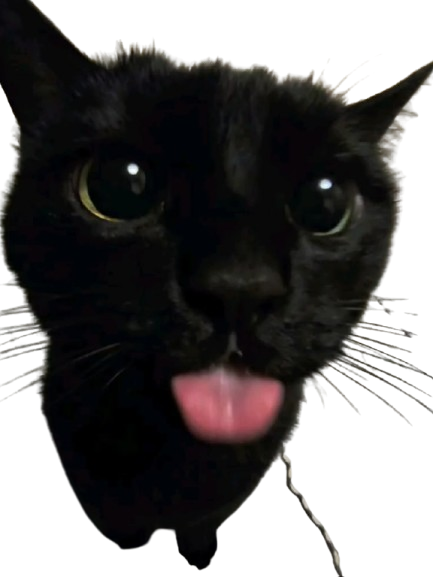
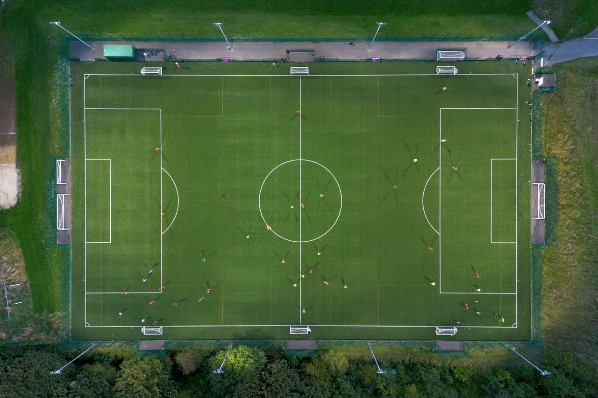
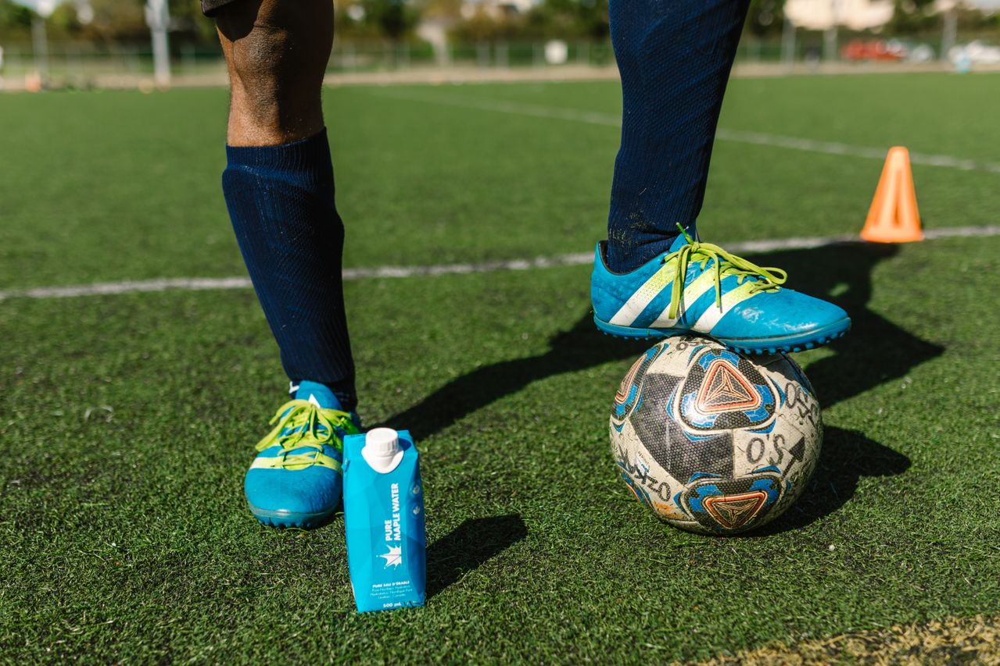

Inventārs un aprīkojums
Pārskats par futbola pamataprīkojumu un aizsargaprīkojumu spēles un treniņu laikā.
Skatīt 4. nodaļu
Laipni lūgti 9. klases datorikas projekta mājaslapā par futbolu. Šeit apkopota informācija par futbola vēsturi, noteikumiem, inventāru, pazīstamiem spēlētājiem, spēļu norisi un datorikas spēles ideju.

Pārskats par futbola pamataprīkojumu un aizsargaprīkojumu spēles un treniņu laikā.
Skatīt 4. nodaļu
Informācija par spēļu kārtām, rezultātiem, laukumiem un spēles gaitu.
Skatīt spēles
Kā futbols tiek pārveidots par datorikas spēli, kāds ir tās mērķis un gaita.
Skatīt projektu
Komanda ir sagatavojusi spēļu formas, bumbas un aizsargaprīkojumu nākamajām kārtām.
Inventārs
Pirmajā kārtā reģistrēts rezultāts 3:1 ar aktīvu uzbrukumu un saspēli visas spēles garumā.
Spēļu saraksts
Regulāros treniņos tiek pilnveidota piespēļu precizitāte, ātrums un komandas sadarbība.
Komanda
Uzbrucējs

Uzbrucējs

Aizsargs

Aizsargs

Vārtsargs

Galvenais treneris
Futbols ir komandu sporta veids, kurā divas komandas ar bumbu cenšas gūt vārtus pretinieku vārtos. Futbols tika izvēlēts, jo tas ir dinamisks, skaidrs un viegli saprotams spēles formāts, kuru var pārvērst pārskatāmā datorikas projektā.
Spēles ar bumbu un kājām bija pazīstamas jau senatnē, bet mūsdienu futbola pirmsākumi saistīti ar 19. gadsimta Lielbritāniju. 1863. gadā tika dibināta Futbola asociācija, bet 1904. gadā starptautiskā organizācija FIFA.
Starp pazīstamiem futbolistiem minami Pelē, Djego Maradona, Lionels Mesi un Krištianu Ronaldu. Nozīmīgākie turnīri ir FIFA Pasaules kauss, Eiropas čempionāts un UEFA Čempionu līga.
Futbols izvēlēts tāpēc, ka tajā ir skaidri noteikumi, uzbrukuma un aizsardzības situācijas un viegli izmērāms rezultāts. Datorikā sporta veids tiek pārveidots par spēli, kurā spēlētājs pieņem lēmumus, cīnās par rezultātu un cenšas pārspēt pretinieku.
Spēles stāsts balstās uz komandas cīņu laukumā par uzvaru. Spēles gaitā komanda veido uzbrukumus, aizsargā savus vārtus un seko līdzi rezultātam, bet galvenais mērķis ir gūt vairāk vārtu par pretinieku, ievērojot noteikumus.

8.1. Att. Futbola bumba un apavi.

8.2. Att. Futbola vārtu un soda laukuma zona.
Mājaslapa izveidota 9. klases datorikas projekta ietvaros par futbolu kā sporta veidu, apkopojot informāciju par noteikumiem, vēsturi, inventāru, spēlētājiem un spēles koncepciju.
Laukums: Centrālais stadions
E-pasts: info@futbols-projekts.lv
Tālrunis: +371 26 742 067
Nodarbības: Pirmdienās, trešdienās un piektdienās plkst. 17:00